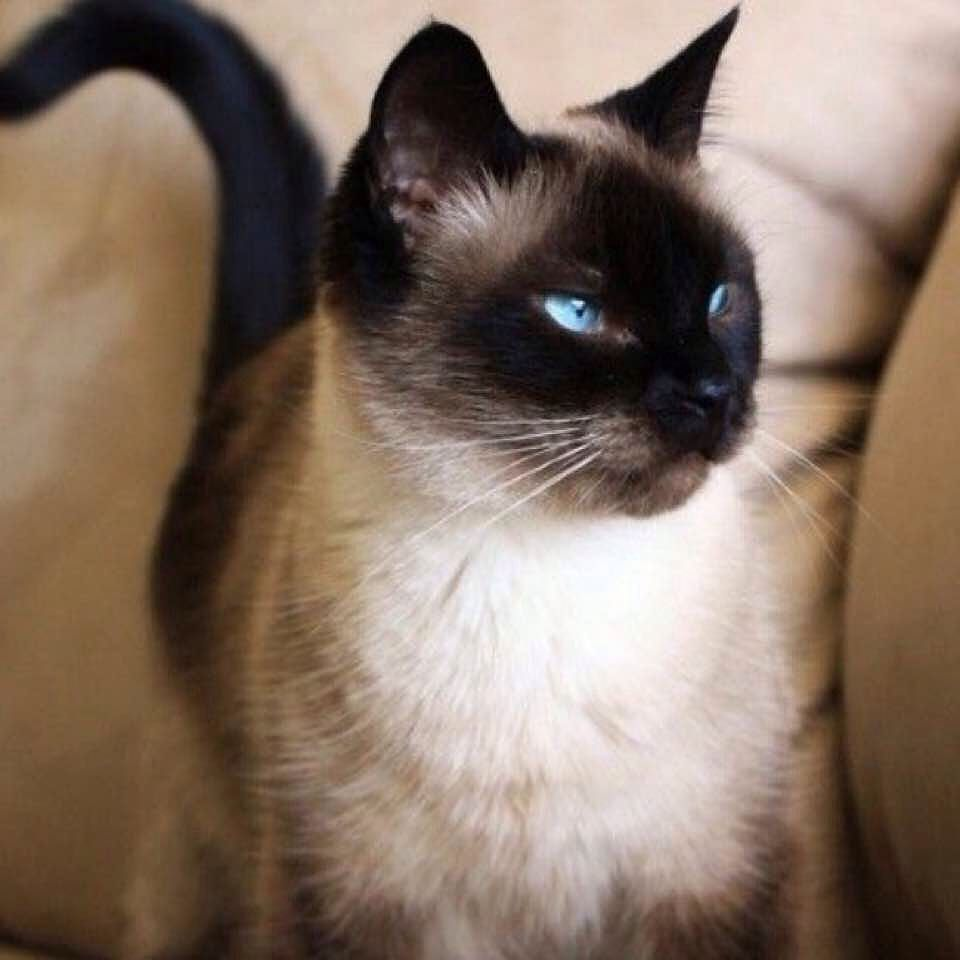

My Resume!

Name: Sir Whiskers de Kitty
Address: 9th Meowtown, Sacramento
Email: sirwhiskerskitty@purrmail.com
Phone: (123) 456-7890
Objective
Decorated neighborhood guardian and elegant Siamese cat seeking a new community to safeguard and charm.
Renowned for my strategic vigilance, adorable appearance, and social magnetism, I am prepared to apply
my rich experience and skills to a new setting.
Skills and Abilities
- Neighborhood Watch: Proven experience in maintaining the safety and security of my community
- Advanced communication skills: Fluent in both "human" and "cat", capable of conveying complex emotions through varied meows, purrs, and body language.
- Expert in Therapeutic Purring: Renowned for having a deep, resonant purr that promotes relaxation and stress relief in my human companions.
- Exceptional cleanliness: Fastidious grooming habits ensure I always look and smell fresh.
- Adorable lounging: My lounging skills are second to none and I have perfected the art of looking cute while doing absolutely nothing.
Experience
Neighborhood Guardian, Meotown (2016-Present)
- Patrolled the neighborhood on a regular schedule, ensuring peace and order, deterring potential intruders (dogs, squirrels, and unwanted rodents).
- Monitored unusual activities and noises, often being the first to alert residents of potential issues.
- Built strategic alliances with neighborhood cats, orchestrating a cohesive network of feline protectors.
- Resolved territory disputes with local felines in a respectful and dignified manner.
Community Liaison, Meowtown (2016-Present)
- Served as a bridge between humans and the animal kingdom, translating feline behavior and promoting understanding.
- Regularly provided therapeutic purring sessions to neighborhood dwellers, resulting in increased community happiness and bonding.
- Championed pet-friendly initiatives, including the successful lobbying for more bird feeders and the ban on noisy fireworks.
- Awarded "Most Beloved Resident" four years in a row at the annual neighborhood block party.
Education
Ph.D. in Community Relations, University of Home Life (2016)
- Major in Territory Management, Minor in Human-Feline Communication
- Dissertation: "Neighborhood Watch: The Feline Touch in Community Safeguarding"
Hobbies and Interests
- Exploring the neighborhood’s nooks and crannies
- Watching birds from the best vantage points
- Enjoying sunbaths on warm sidewalks
References
Available upon request - includes a list of neighborhood families, previous pet sitters, veterinarians, and local feline friends.
Availability
Available for daily patrols, community engagements, and emergency alerts. Breaks for important nap sessions and personal grooming are required. Looking for a friendly, vibrant, and peaceful community with ample space to roam and plenty of warm laps for the occasional rest.